⚠
data.js não encontrado.
Execute
python gerar_dados.py
na pasta beedoo/ e recarregue a página.

Dashboard
Operacional
— Indicadores de Performance
Carregando dados...
Cobrança
Atendimento
Insights Executivos
Total CPC Trabalhado
–
–
Boletos Convertidos
–
–
Boletos Pagos
–
Sobre enviados totais
Eficiência Média
–
Pago / Enviado (total)
ICM Médio
–
Índice composto geral
Abs. com Falta
–
Operadores c/ dias não trabalhados
ICM por Operador — Ranking de Performance
CPC Trabalhado vs. Boleto Pago (Top 20)
Eficiência por Operador (Top 20)
Média de Qualidade — Distribuição
Dispersão: CPC × ICM
Tabela Completa — Cobrança
Vol. Total Atendimentos
–
–
NPS Líquido
–
–
CSAT Conv. Médio
–
Escala 0–5
ICM Médio
–
Atendimento
Rechamada Média
–
Média por operador
TMA Médio
–
Tempo Médio Atendimento
ICM — Atendimento por Operador
NPS: Promotores vs Detratores vs Neutros
CSAT Convencional por Operador
Volume de Atendimento vs Rechamada (%)
Média de Qualidade — Atendimento
Composição NPS (Stacked)
Tabela Completa — Atendimento
Matriz: Eficiência × ICM — Cobrança
Comparativo: ICM vs Qualidade — Atendimento